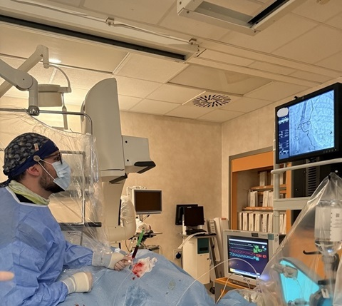

La visita cardiologica con elettrocardiogramma (ECG) rappresenta il primo e fondamentale livello di valutazione del paziente con sospetta o nota patologia cardiovascolare.
Si tratta di una prestazione completa che integra l’anamnesi, l’esame obiettivo e la registrazione dell’attività elettrica cardiaca mediante ECG. Durante il colloquio iniziale vengono raccolte informazioni dettagliate sui sintomi, sui fattori di rischio cardiovascolare e su eventuali terapie in corso.L’esame obiettivo si concentra sulla ricerca di segni clinici suggestivi di patologie cardiache misconosciute o meno. A seguire, l’elettrocardiogramma a riposo consente di registrare l’attività elettrica del cuore mediante elettrodi posizionati sulla superficie corporea: esso permette di identificare alterazioni del ritmo, disturbi della conduzione elettrica cardiaca, segni di ischemia miocardica acuta o pregressa e anomalie strutturali indirette.
Questa prestazione è indicata sia in ambito preventivo, per stratificare il rischio cardiovascolare in pazienti asintomatici, sia in ambito diagnostico per inquadrare sintomi di possibile origine cardiaca. L’integrazione tra dati clinici ed ECG consente spesso una diagnosi immediata o, nei casi più complessi, l’indirizzo verso ulteriori accertamenti (ecocardiogramma, test da sforzo, monitoraggio Holter, imaging avanzato).
La visita cardiologica con ECG è quindi uno strumento rapido, non invasivo e ad alto valore clinico, che consente una valutazione globale dello stato cardiovascolare e rappresenta il punto di partenza per un corretto percorso diagnostico-terapeutico personalizzato.
Ecocardiogramma transtoracico
L’ecocardiogramma è un esame diagnostico non invasivo che utilizza ultrasuoni per visualizzare in tempo reale l’anatomia e la funzione del cuore. Rappresenta uno strumento di primo livello nella diagnostica cardiologica, fondamentale per la valutazione delle dimensioni delle camere cardiache, dello spessore delle pareti, della funzione ventricolare e della morfologia e funzionalità delle valvole cardiache.
Durante l’esame, una sonda ecografica viene appoggiata sul torace del paziente e consente di ottenere immagini del cuore, integrate da tecniche Doppler che permettono di analizzare i flussi ematici intracardiaci. Questo consente di identificare eventuali stenosi o insufficienze valvolari, shunt intracardiaci, alterazioni della cinetica segmentaria del miocardio e segni di ipertensione polmonare.
L’ecocardiogramma è indicato in numerose condizioni cliniche: valutazione di soffi cardiaci, sospetto scompenso cardiaco, cardiopatie ischemiche, cardiomiopatie, pericarditi e monitoraggio di pazienti con patologie note o sottoposti a trattamenti farmacologici potenzialmente cardiotossici. Inoltre, è uno strumento essenziale nel follow-up di pazienti con valvulopatie o protesi valvolari.
Grazie alla sua sicurezza, ripetibilità e assenza di esposizione a radiazioni ionizzanti, l’ecocardiogramma può essere eseguito più volte nel tempo per monitorare l’evoluzione di una patologia o la risposta alla terapia. L’esame fornisce informazioni quantitative e qualitative fondamentali per la stratificazione prognostica e per la pianificazione del trattamento, sia medico che interventistico.
In sintesi, l’ecocardiogramma è una metodica cardine della cardiologia moderna, capace di offrire una valutazione completa e dinamica della funzione cardiaca, contribuendo in modo determinante alla diagnosi e alla gestione delle malattie cardiovascolari.
Coronarografia
La coronarografia è un esame invasivo di riferimento per lo studio delle arterie coronarie, indicato nella diagnosi e nel trattamento della malattia coronarica. Consiste nell’introduzione di un catetere attraverso un accesso arterioso (generalmente radiale o femorale) fino all’origine delle coronarie, seguita dall’iniezione di mezzo di contrasto iodato che consente la visualizzazione diretta del lume vascolare mediante fluoroscopia.

Questo esame permette di identificare con precisione la presenza, la sede e la gravità di eventuali stenosi o occlusioni coronariche, responsabili di ischemia miocardica. La coronarografia è indicata in pazienti con sindromi coronariche acute (infarto miocardico con o senza sopraslivellamento del tratto ST), angina stabile ad alto rischio o test non invasivi positivi per ischemia.
Uno dei principali vantaggi della coronarografia è la possibilità di eseguire, nello stesso contesto procedurale, un trattamento interventistico mediante angioplastica coronarica (PCI), con posizionamento di stent per ripristinare il flusso ematico. Questo approccio “diagnostico-terapeutico” consente una gestione immediata ed efficace delle lesioni coronariche significative.
La procedura viene eseguita in ambiente sterile, sotto monitoraggio continuo dei parametri vitali e in anestesia locale. Sebbene sia generalmente sicura, presenta rischi potenziali (reazioni al mezzo di contrasto, complicanze vascolari, aritmie), che vengono minimizzati attraverso un’accurata selezione del paziente e protocolli standardizzati.
La coronarografia rappresenta quindi il gold standard per la diagnosi della cardiopatia ischemica, fornendo informazioni anatomiche dettagliate indispensabili per la scelta terapeutica. È uno strumento cruciale nella cardiologia interventistica moderna, capace di migliorare significativamente la prognosi dei pazienti con malattia coronarica.
↑ Torna su

 L’ecocardiogramma è un esame diagnostico non invasivo che utilizza ultrasuoni per visualizzare in tempo reale l’anatomia e la funzione del cuore. Rappresenta uno strumento di primo livello nella diagnostica cardiologica, fondamentale per la valutazione delle dimensioni delle camere cardiache, dello spessore delle pareti, della funzione ventricolare e della morfologia e funzionalità delle valvole cardiache.
Durante l’esame, una sonda ecografica viene appoggiata sul torace del paziente e consente di ottenere immagini del cuore, integrate da tecniche Doppler che permettono di analizzare i flussi ematici intracardiaci. Questo consente di identificare eventuali stenosi o insufficienze valvolari, shunt intracardiaci, alterazioni della cinetica segmentaria del miocardio e segni di ipertensione polmonare.
L’ecocardiogramma è indicato in numerose condizioni cliniche: valutazione di soffi cardiaci, sospetto scompenso cardiaco, cardiopatie ischemiche, cardiomiopatie, pericarditi e monitoraggio di pazienti con patologie note o sottoposti a trattamenti farmacologici potenzialmente cardiotossici. Inoltre, è uno strumento essenziale nel follow-up di pazienti con valvulopatie o protesi valvolari.
Grazie alla sua sicurezza, ripetibilità e assenza di esposizione a radiazioni ionizzanti, l’ecocardiogramma può essere eseguito più volte nel tempo per monitorare l’evoluzione di una patologia o la risposta alla terapia. L’esame fornisce informazioni quantitative e qualitative fondamentali per la stratificazione prognostica e per la pianificazione del trattamento, sia medico che interventistico.
In sintesi, l’ecocardiogramma è una metodica cardine della cardiologia moderna, capace di offrire una valutazione completa e dinamica della funzione cardiaca, contribuendo in modo determinante alla diagnosi e alla gestione delle malattie cardiovascolari.
L’ecocardiogramma è un esame diagnostico non invasivo che utilizza ultrasuoni per visualizzare in tempo reale l’anatomia e la funzione del cuore. Rappresenta uno strumento di primo livello nella diagnostica cardiologica, fondamentale per la valutazione delle dimensioni delle camere cardiache, dello spessore delle pareti, della funzione ventricolare e della morfologia e funzionalità delle valvole cardiache.
Durante l’esame, una sonda ecografica viene appoggiata sul torace del paziente e consente di ottenere immagini del cuore, integrate da tecniche Doppler che permettono di analizzare i flussi ematici intracardiaci. Questo consente di identificare eventuali stenosi o insufficienze valvolari, shunt intracardiaci, alterazioni della cinetica segmentaria del miocardio e segni di ipertensione polmonare.
L’ecocardiogramma è indicato in numerose condizioni cliniche: valutazione di soffi cardiaci, sospetto scompenso cardiaco, cardiopatie ischemiche, cardiomiopatie, pericarditi e monitoraggio di pazienti con patologie note o sottoposti a trattamenti farmacologici potenzialmente cardiotossici. Inoltre, è uno strumento essenziale nel follow-up di pazienti con valvulopatie o protesi valvolari.
Grazie alla sua sicurezza, ripetibilità e assenza di esposizione a radiazioni ionizzanti, l’ecocardiogramma può essere eseguito più volte nel tempo per monitorare l’evoluzione di una patologia o la risposta alla terapia. L’esame fornisce informazioni quantitative e qualitative fondamentali per la stratificazione prognostica e per la pianificazione del trattamento, sia medico che interventistico.
In sintesi, l’ecocardiogramma è una metodica cardine della cardiologia moderna, capace di offrire una valutazione completa e dinamica della funzione cardiaca, contribuendo in modo determinante alla diagnosi e alla gestione delle malattie cardiovascolari.